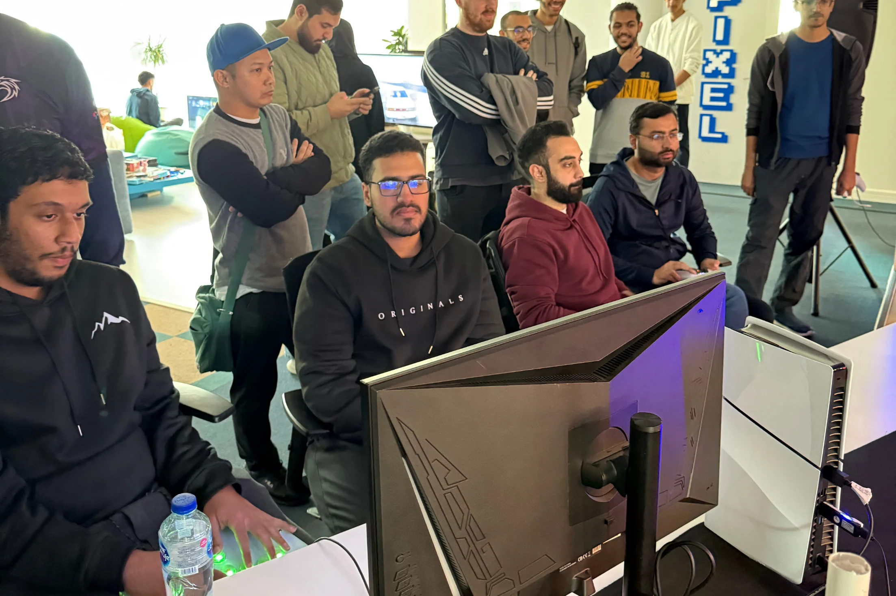
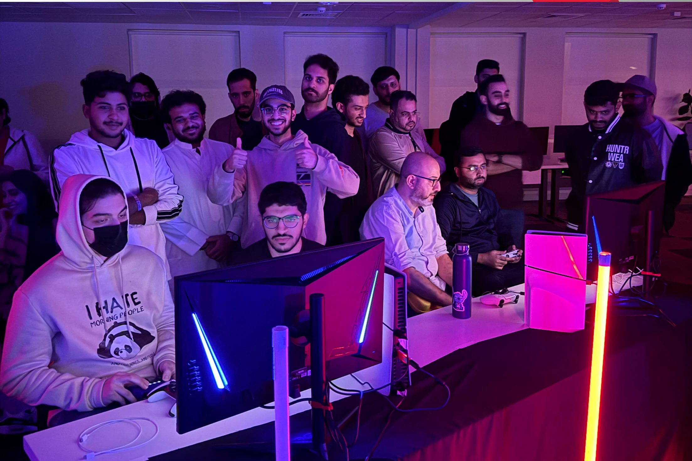
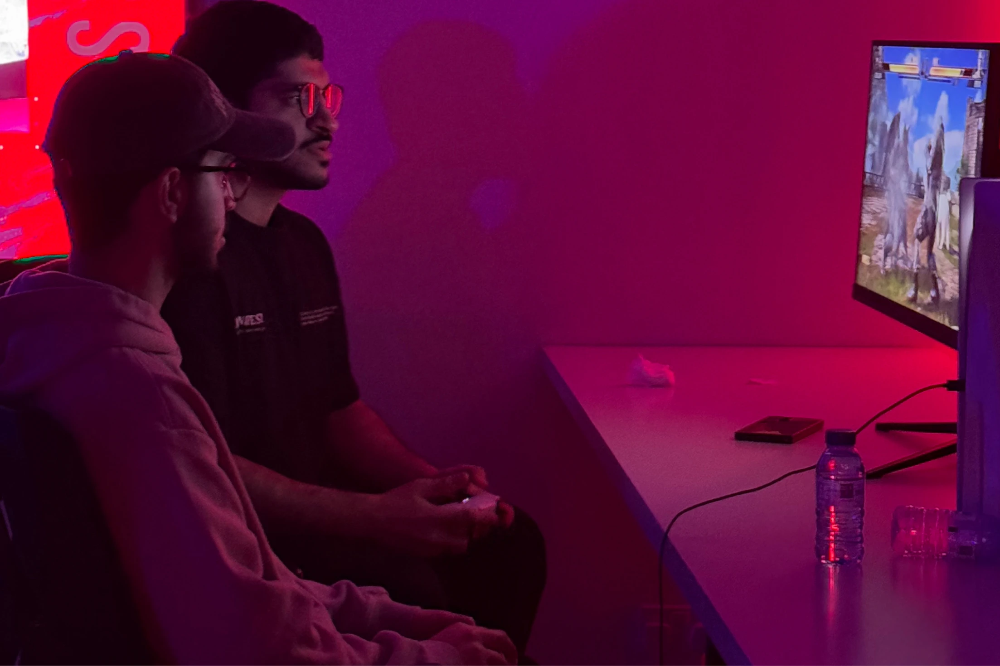
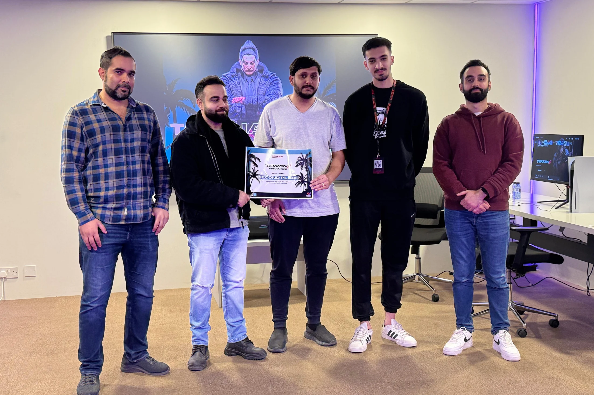
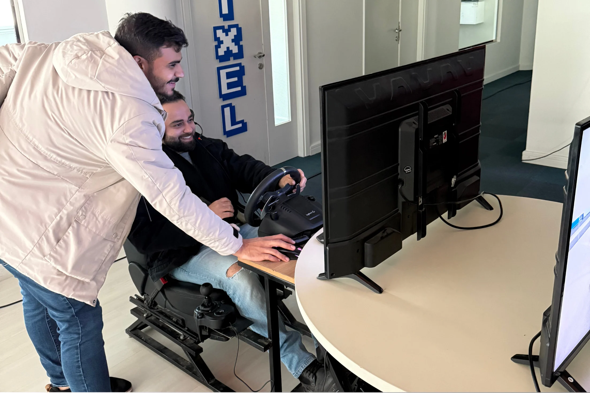

The Reboot Tekken 8 Tournament brought together 64 skilled fighters for an intense LAN competition at the Reboot Coding Institute! This community-focused event featured a double elimination format, creating an electrifying atmosphere where players could showcase their Tekken skills in a professional yet welcoming environment.
Tournament Overview
This LAN tournament was designed to provide a premium competitive experience for Tekken 8 players, combining the excitement of in-person competition with the technical excellence of professional tournament organization. The double elimination format ensured that players had multiple opportunities to prove their skills.
Bracket: Double Elimination
Venue: Reboot Coding Institute
Streaming: Live coverage throughout
Tournament Statistics
Event Highlights
The tournament was filled with spectacular moments, from intense comebacks to perfectly executed combos. The LAN environment created an electric atmosphere where players felt the energy of the crowd and their opponents, making every match a memorable experience.
- Intense 1v1 fighting game battles
- Double elimination bracket format
- Live streaming and commentary
- Professional tournament setup
- Community engagement and networking
BEC's Role & Responsibilities
BEC played a crucial role in ensuring the tournament's success, handling every aspect from technical setup to community engagement. Our expertise in tournament organization and LAN event management helped create a seamless experience for all participants.
- Event planning and team coordination
- Match scheduling and bracket management
- On-site tech support and streaming
- Casting and spectator management
- Match hosting and refereeing
- Tournament bracket setup
- Venue setup and equipment management
- Social media content creation and result announcements
Event Gallery
Here are some of the exciting moments from the Reboot Tekken 8 Tournament. These images capture the intensity, skill, and community spirit that made this event so special.






Impact & Future
The Reboot Tekken 8 Tournament successfully demonstrated the potential for high-quality LAN events in Bahrain. The positive feedback from participants and the success of the double elimination format encouraged us to continue organizing similar events.
This tournament strengthened the fighting game community and set a new standard for competitive gaming events in the region. It paved the way for more LAN tournaments and supported the growth of the local fighting game scene.